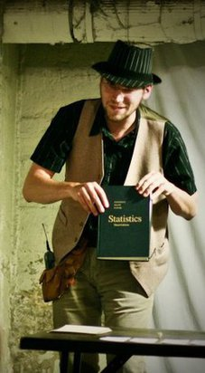

{% extends "columns.j2" %}
{% block main %}
## About Me
I am a human male, 20-something years old, from Canada. I was born in [Calgary](http://en.wikipedia.org/wiki/Calgary), but I currently reside in [Hamilton](http://en.wikipedia.org/wiki/Hamilton,_Ontario).
### Academics
I'm currently a MSc student at McMaster University. I got my BSc in Physics with a minor in Computer Science from the University of Calgary in 2011. My current research involves numerical modelling of galaxy evolution over cosmological timescales.
As an undergraduate at the U of C, I worked with [Dr. Jeroen Stil](http://www.ras.ucalgary.ca/~stil/) on stacking radio polarization to examine faint extragalactic sources. Our work should produce a few papers in 2012. I also generated a large sky simulation that was used in [George et al. 2011](http://www.physics.mcmaster.ca/~kellerbw/publications.html), and worked in the POSSUM Working Group 2 to determine the requirements for stacking applications for the Australian SKA Pathfinder (ASKAP) radio telescope.
At McMaster, I work with [Dr. James Wadsley](http://imp.mcmaster.ca/) in the Physics & Astronomy department. My current research is focused on developing and improving subgrid models used in Smoothed Particle Hydrodynamics (SPH) models of galaxies. I'm particularly trying to recalibrate the effects of star formation, especially with regards to metal enrichment and cooling. I'm also looking to improve the accretion modelling used in order to better understand the effects of SMBH formation and evolution on their host galaxies. Once this work is done, I hope to be able to use it to produce really good galactic initial conditions for simulating mergers and AGNs.
I'm a TA for PHYS 1BB3 (Modern Physics for Life Sciences) and ASTRON 1B03 (Big Questions). If you are one of my students, feel free to email me if you'd like to ask me any questions, or set up office hours.
### A Few Things I Like
* Tea
* Python
* github
* vim
* The Future
### Some Stuff I Dislike
* Drudgery
* Black Licorice
* Facebook
* Java
{% endblock main %}
{% block sidebar %}

Check some of my stuff out
{% endblock sidebar %}